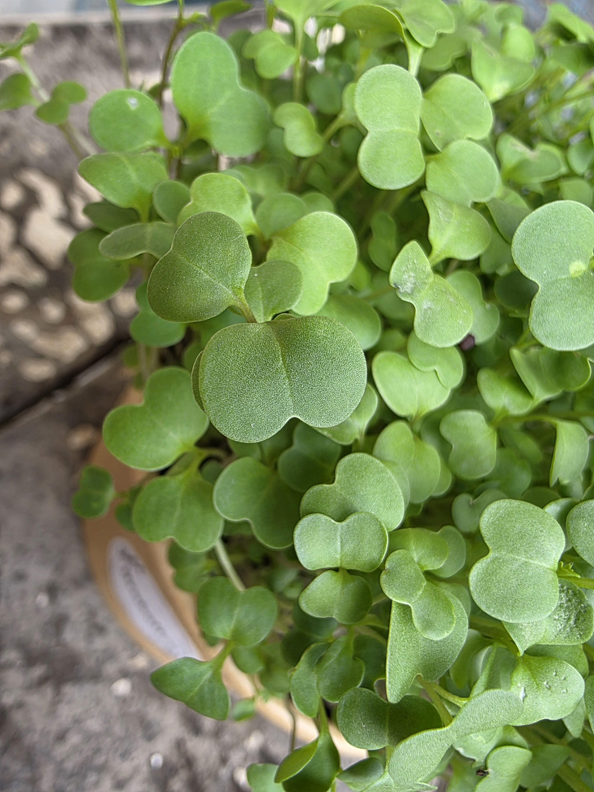

Brokolice
-ideální pro každodenní kuchyni
-vysoký obsah antioxidantů
-bohatá na vitamíny A, C, K a B9 a vápník, hořčík, draslík a železo
-nepálivá chuť – jemná a svěží s brokolicovým nádechem
Výhonky brokolice jsou bohaté na širokou škálu vitamínů:
-vitamín A – klíčový pro zrak, imunitní systém a kvalitu pokožky
-vitamín C – podporuje imunitu
-vitamín K – klíčový pro srážlivost krve a zdraví kostí
-vitamín B9 (kyselina listová)
Obsahuje také minerály jako vápník, hořčík, draslík nebo železo a antioxidanty.
Brokolice podporuje imunitu, detoxikaci organismu a celkovou ochranu buněk.
Použití v kuchyni:
Tím, že je brokolice univerzální, je ideální na využití v každodenní kuchyni. Hodí se do salátů, sendvičů, smoothie, nebo jako dekorace teplých i studených pokrmů.
Cena 35 Kč • Kelímek ∅ 11 cm • Odběr dle dohody Jaroměř a okolí